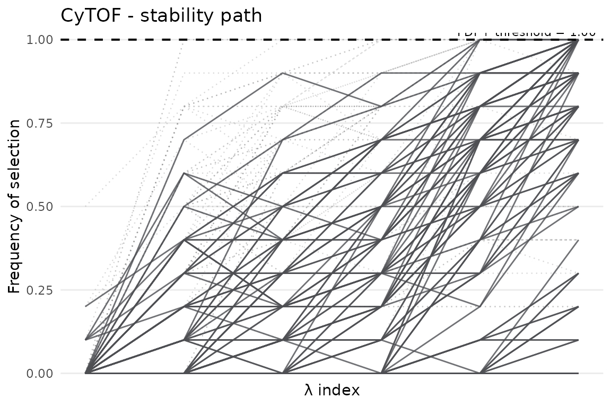
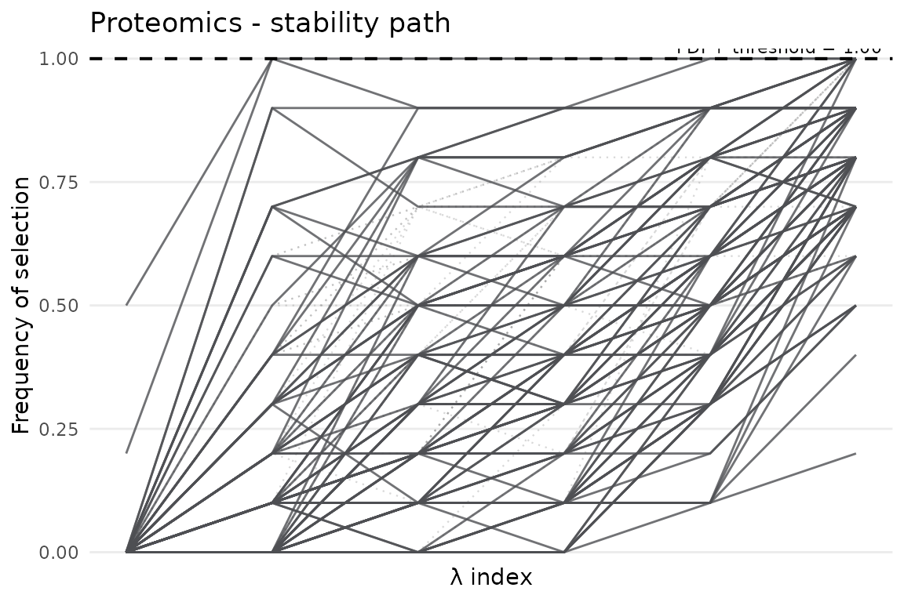
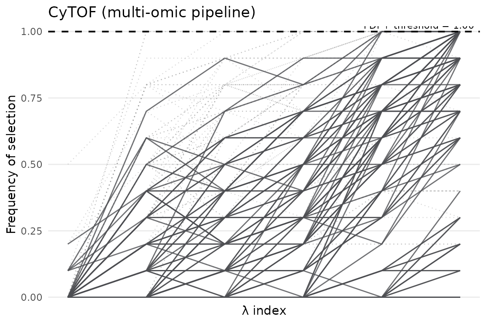
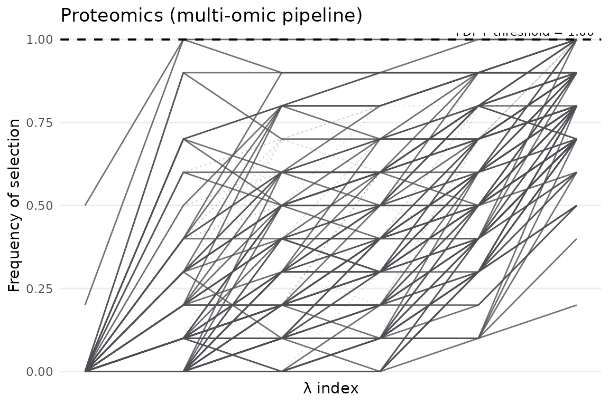

Multi-Omic Biomarker Discovery with stablr
Source:vignettes/stablr-multiomic.Rmd
stablr-multiomic.RmdNote: This vignette is executable. It uses the bundled OOL subset, compact lambda grids, small bootstrap counts, and random-permutation decoys so package renders catch API drift without requiring optional knockoff dependencies.
Overview
A multi-omic dataset is a set of partial views. One assay sees immune-cell state, another sees circulating proteins, and the phenotype is the same person seen through both. The statistical question is not only “which features are stable?” but also “does a feature remain useful when another view is allowed to speak?”
This vignette uses a real Onset of Labor (OOL) dataset bundled with stablr. It contains two omic layers, CyTOF and Proteomics, measured in pregnant women. The outcome is days-to-onset-of-labor (DOS), a continuous regression target. The settings are intentionally bounded for package builds while preserving the shape of a real train/validation analysis.
We will:
- Loading the bundled example data with
load_ool_data(). - Running per-omic STABL — a useful baseline before integration.
- Running the integrated multi-omic workflow with early fusion and late fusion.
- Comparing selected feature names across strategies.
- Exporting results.
Learning objectives
By the end, you should be able to:
- Understand the data structure returned by
load_ool_data(). - Run STABL independently on each omic and interpret the outputs.
- Explain the difference between early fusion and late fusion.
- Run
stabl_multiomic_train_validate()and navigate its result list. - Compare which features appear across integration strategies.
- Export results for downstream use.
1. Load the data
load_ool_data() reads the bundled OOL subset directly from the package. No file paths are needed. It returns a named list with two elements:
-
$x_list: a named list of feature matrices, one per omic layer. Each matrix has samples in rows and features in columns, with matching row names. -
$y: a named numeric vector of outcomes (DOS in days), aligned to the rows of every matrix in$x_list.
Relation to the Python tutorial notebook: this is a bounded package example, not a full reproduction of Notebook examples/Tutorial Notebook.ipynb. The notebook uses the full OOL-CV training files (CyTOF, Proteomics, and Metabolomics) and the COVID-19 proteomics classification dataset. It also applies a preprocessing pipeline before STABL: zero-variance filtering, high-missingness feature filtering, median imputation, and standardisation. Here, load_ool_data() ships a compact 100-feature OOL subset for CyTOF and Proteomics only, already aligned and without missing values. Use docs/PYTHON_TO_R_MAPPING.md when the goal is to mirror the tutorial notebook’s datasets and preprocessing choices.
ool_train <- load_ool_data(split = "train")
ool_valid <- load_ool_data(split = "valid")
# Training set dimensions
lapply(ool_train$x_list, dim)
#> $cytof
#> [1] 150 100
#>
#> $proteomics
#> [1] 150 100
length(ool_train$y)
#> [1] 150
# Validation set dimensions
lapply(ool_valid$x_list, dim)
#> $cytof
#> [1] 21 100
#>
#> $proteomics
#> [1] 21 100The lapply(..., dim) output confirms the basic geometry: the omics share rows but differ in columns. Row names must match across views. stablr checks this alignment and stops early if it detects a mismatch.
# Outcome distribution (DOS = days before onset of labor)
summary(ool_train$y)
#> Min. 1st Qu. Median Mean 3rd Qu. Max.
#> -113.00 -70.75 -35.50 -43.39 -15.00 0.00The summary() output shows the spread of DOS. A wide range is expected; a strong skew or narrow range changes how much prediction signal one should expect from molecular measurements.
2. Per-omic STABL
Before integrating views, it is worth listening to each one alone. A per-omic fit is both a sanity check and a baseline:
- Sanity check — does each omic contain any signal at all? If STABL selects zero features from an omic, that layer may not contribute useful information to the integrated analysis.
- Baseline — the per-omic biomarker lists can be compared to the integrated results to see which features survive the joint analysis.
We use compact 6-point lambda grids and small bootstrap counts throughout this vignette. Increase to 500-1000 bootstraps and broader grids for publication-quality results.
When each fit prints, look first at the number of selected feature names and the FDP estimate. The ideal result is not simply a long list. It is a compact list whose stability is difficult for decoys to explain.
lambda_cytof <- auto_lambda_grid(
ool_train$x_list$cytof, ool_train$y,
family = "gaussian", n_lambda = 6
)
fit_cytof <- stabl_fit(
x = ool_train$x_list$cytof,
y = ool_train$y,
lambda_grid = lambda_cytof,
family = "gaussian",
n_bootstraps = 10L,
artificial_type = "random_permutation",
random_state = 42L
)
fit_cytof
#> <stabl_fit>
#> Features in: 100
#> Features selected: 0
#> Min FDP+: 1.044
#> FDP+ threshold: 1
#> Artificial: random_permutation
lambda_prot <- auto_lambda_grid(
ool_train$x_list$proteomics, ool_train$y,
family = "gaussian", n_lambda = 6
)
fit_prot <- stabl_fit(
x = scale(ool_train$x_list$proteomics),
y = ool_train$y,
lambda_grid = lambda_prot,
family = "gaussian",
n_bootstraps = 10L,
artificial_type = "random_permutation",
random_state = 42L
)
fit_prot
#> <stabl_fit>
#> Features in: 100
#> Features selected: 0
#> Min FDP+: 1.01
#> FDP+ threshold: 1
#> Artificial: random_permutationget_feature_names_out() returns the feature names that passed the stability threshold in each omic. Use get_support() when you need the named logical mask for subsetting. Non-overlapping lists suggest view-specific information. Overlap, when the same molecule is measured in both layers, is stronger evidence because the signal has appeared twice through different measurement systems.
cat("CyTOF selected feature names:
")
#> CyTOF selected feature names:
print(get_feature_names_out(fit_cytof))
#> character(0)
cat("
Proteomics selected feature names:
")
#>
#> Proteomics selected feature names:
print(get_feature_names_out(fit_prot))
#> character(0)In the stability path, each line is one feature. Features that hold high selection frequencies across a moderate penalty range are the most convincing. Features that appear only when the penalty is very weak are easier to dismiss as opportunistic.
plot_stabl_path(fit_cytof, title = "CyTOF - stability path")
plot_stabl_path(fit_prot, title = "Proteomics - stability path")
3. Integrated multi-omic workflow
stabl_multiomic_train_validate() puts the train/validation analysis into one call. It accepts matched omic matrices and evaluates two complementary ways to let the views interact:
| Strategy | How it works | Best when |
|---|---|---|
| Early fusion | Concatenates all omic matrices into one wide matrix, then runs a single STABL fit across all features jointly. | Omics are measured on the same samples; you want a unified biomarker list. |
| Late fusion | Fits one STABL + downstream model per omic separately, then learns the optimal weighted combination of predictions on the validation set. | You want to know each omic’s independent predictive contribution. |
Key arguments:
| Argument | Purpose |
|---|---|
x_train_list / x_valid_list
|
Named lists of feature matrices; names must match between train and valid. |
lambda_grid |
Named list of lambda grids, one per omic (names must match x_train_list). |
early_fusion / late_fusion
|
Toggle each strategy on or off independently. |
n_iter_lf |
Number of optimisation iterations for the late-fusion weight search. |
The printed multi_fit object summarises every active branch: per-omic selected-feature counts, whether validation data are present, early-fusion branch presence, and the late-fusion score. Binary and regression late fusion use parity-preserving batched stacking; multiclass stacking remains scalar by design to preserve probability-normalisation and tie behavior.
# Build per-omic lambda grids
lambda_list <- list(
cytof = auto_lambda_grid(ool_train$x_list$cytof,
ool_train$y, family = "gaussian", n_lambda = 6),
proteomics = auto_lambda_grid(ool_train$x_list$proteomics,
ool_train$y, family = "gaussian", n_lambda = 6)
)
multi_fit <- stabl_multiomic_train_validate(
x_train_list = ool_train$x_list,
y_train = ool_train$y,
lambda_grid = lambda_list,
x_valid_list = ool_valid$x_list,
y_valid = ool_valid$y,
family = "gaussian",
n_bootstraps = 10L,
artificial_type = "random_permutation",
early_fusion = TRUE,
late_fusion = TRUE,
n_iter_lf = 100L,
random_state = 42L
)
multi_fit
#> <stabl_multiomic_fit>
#> Omics: 2 (cytof, proteomics)
#> Per-omic selected features:
#> cytof: 0
#> proteomics: 0
#> Validation data: yes
#> Early fusion: yes (0 features selected)
#> Late fusion: yes (score = 0)4. Exploring results
multi_fit is a list because the workflow has several branches. The main elements are:
-
$fits: named list ofstabl_fitobjects, one per omic. These are the per-omic STABL results produced within the joint pipeline. -
$early_fusion: result of the early-fusion step (ifearly_fusion = TRUE), containing$fit(astabl_fiton the concatenated matrix). -
$late_fusion: result of the late-fusion step (iflate_fusion = TRUE), containing$valid_predictions(validation predictions) and$weights(per-omic importance weights).
# Per-omic selected feature names from the joint pipeline
cat("CyTOF (from multi-omic pipeline):
")
#> CyTOF (from multi-omic pipeline):
print(get_feature_names_out(multi_fit$fits$cytof))
#> character(0)
cat("
Proteomics (from multi-omic pipeline):
")
#>
#> Proteomics (from multi-omic pipeline):
print(get_feature_names_out(multi_fit$fits$proteomics))
#> character(0)
# Early fusion: joint selection across all omics simultaneously
if (!is.null(multi_fit$early_fusion)) {
cat("Early fusion selected feature names:\n")
print(get_feature_names_out(multi_fit$early_fusion$fit))
}
#> Early fusion selected feature names:
#> character(0)Early fusion can disagree with the per-omic lists because the joint model sees all features at once. A feature that is useful alone may become redundant when another omic carries the same information. That is a property of the joint question, not a failure of the method.
# Late fusion: optimal linear combination of per-omic predictions
if (!is.null(multi_fit$late_fusion)) {
cat("Late fusion validation predictions (first 6):\n")
print(head(multi_fit$late_fusion$valid_predictions))
}
#> Late fusion validation predictions (first 6):
#> 004_31_A 004_34_B 015_30_A 015_34_B 015_36_C 047_26_A
#> -43.39333 -43.39333 -43.39333 -43.39333 -43.39333 -43.39333$valid_predictions is a numeric vector of predicted DOS values for the held-out validation set, one prediction per sample. Compare these to ool_valid$y to assess predictive performance. The $weights element shows how much each omic contributed to the combined prediction; a weight near zero means that view added little beyond the other view.
plot_stabl_path(multi_fit$fits$cytof,
title = "CyTOF (multi-omic pipeline)")
plot_stabl_path(multi_fit$fits$proteomics,
title = "Proteomics (multi-omic pipeline)")
5. Export results
save_stabl_results() writes the result of a single stabl_fit object to disk:
| File | Content |
|---|---|
STABL scores.csv |
Full stability-score matrix. |
Max STABL scores.csv |
Per-feature maximum stability scores. |
FDR Graph.<fmt> |
FDP diagnostic plot when artificial features are used. |
Stability Path.<fmt> |
Stability path plot. |
Selected Features/Selected features.csv |
Features above the threshold. |
Selected Features/Feature distributions.<fmt> |
Per-feature outcome distributions when features are selected. |
Set override = TRUE to overwrite an existing directory, which is useful when an analysis is being rerun with more bootstraps or a revised grid.
out_dir <- file.path(tempdir(), "stablr_ool_cytof")
save_stabl_results(
object = multi_fit$fits$cytof,
path = out_dir,
x = ool_train$x_list$cytof,
y = ool_train$y,
task_type = "regression",
figure_fmt = "png",
override = TRUE
)
list.files(out_dir, recursive = TRUE)
#> [1] "FDR Graph.png"
#> [2] "Max STABL artificial scores.csv"
#> [3] "Max STABL scores.csv"
#> [4] "Selected Features/Selected features.csv"
#> [5] "Stability Path.png"
#> [6] "STABL artificial scores.csv"
#> [7] "STABL scores.csv"Next steps
- Use
stabl_multiomic_cv()for a fully cross-validated evaluation when no pre-defined validation split is available. - Pass
groupsto respect subject-level grouping in bootstrap resampling and CV fold construction. - See
vignette("stablr-intro")for single-omic usage and alternative learners. - See
vignette("stablr-cooperative")for cross-view cooperative fusion (rhotuning) when blocks should agree without full concatenation. - For integrative classification benchmarks against mixOmics DIABLO on TCGA, see
vignette("stablr-tcga-nestedcv")andinst/analysis/BENCHMARK_PLAN.md. - For selection parity with the original Python STABL implementation, see
docs/PYTHON_TO_R_MAPPING.md.